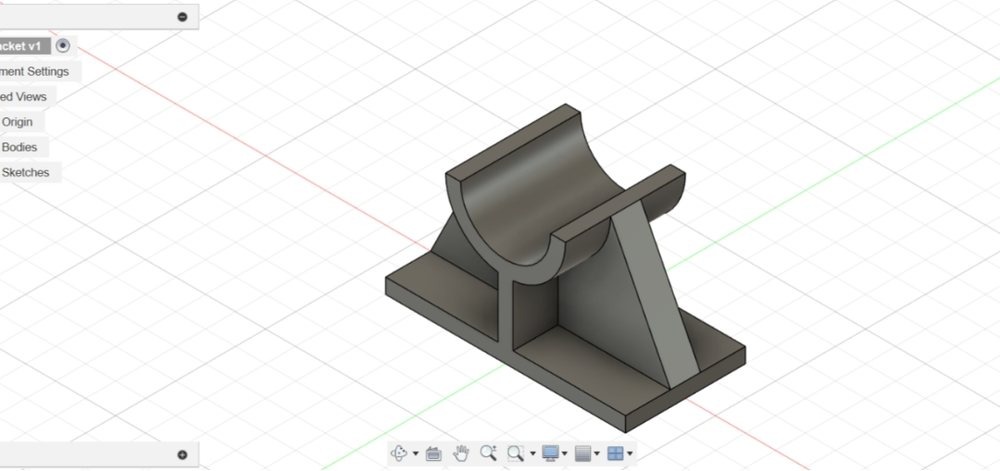

CAD modelling
I model in Autodesk Fusion 360, sketching, constraining, extruding and rotating objects in 3D, and I wrote about what that taught me in Learning by designing. [Add what you design, from concept model to a drawing someone else can build from.]
Tools: Autodesk Fusion 360